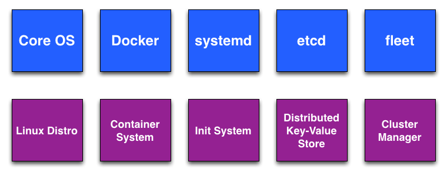

| z, ? | toggle help (this) |
| space, → | next slide |
| shift-space, ← | previous slide |
| b | blank screen |
| d | toggle debug mode |
| ## <ret> | go to slide # |
| c, t | table of contents (vi) |
| f | toggle footer |
| g | toggle follow |
| r | reload slides |
| n | toggle notes |
| p | run preshow |
| P | toggle pause |
| s | choose style |


coreos:
etcd:
# generate new token for cluster
# https://discovery.etcd.io/new
discovery: https://discovery.etcd.io/<token>
# multi-cloud deployments need to use $public_ipv4
addr: $private_ipv4:4001
peer-addr: $private_ipv4:7001
units:
- name: etcd.service
command: start
- name: fleet.service
command: start
fleet:
- public-ip: $public_ipv4
- metadata: region=us-east-1,disk=ssd,model=m3.2xlarge
[Unit]
Description=MyApp
After=docker.service
Requires=docker.service
[Service]
TimeoutStartSec=0
ExecStartPre=-/usr/bin/docker kill busybox1
ExecStartPre=-/usr/bin/docker rm busybox1
ExecStartPre=/usr/bin/docker pull busybox
ExecStart=/usr/bin/docker run --name busybox1 busybox \
/bin/sh -c "while true; do echo Hello World; sleep 1; done"# Enable and start the service
$ sudo systemctl enable /etc/systemd/system/hello.service
$ sudo systemctl start hello.service
# Read the logs
$ journalctl -f -u hello.service
$ docker ps
$ docker logs <container_id>
etcd is a distributed, consistent key value store for shared configuration and
service discovery
etcd is written in Go and uses the Raft consensus algorithm to manage a
highly-available replicated log
# Set a value that expires after 60s
# Also creates dir /foo is it does not exist
$ etcdctl set /foo/bar "Hello world" --ttl 60
Hello world
# Get a value
$ etcdctl get /foo/bar
Hello world
# Update a value, if it exists
$ etcdctl update /foo/bar
Hello world
$ etcdctl update /foo/missing dingo
Error: 100: Key not found (/foo/missing) [45034]
# Remove a value
$ etcdctl rm /foo/bar# List a directory
$ etcdctl ls /foo
/foo/bar
/foo/car
# List a directory recursively
$ etcdctl ls --recursive /
/coreos.com
/coreos.com/updateengine
/coreos.com/updateengine/rebootlock
/coreos.com/updateengine/rebootlock/semaphore
/foo/bar
/foo/car# Watch a key for changes
$ etcdctl watch /foo/bar
Hello world
$ etcdctl exec-watch /foo/bar -- sh -c "env | grep ETCD"
ETCD_WATCH_ACTION=set
ETCD_WATCH_VALUE=Dingo
ETCD_WATCH_MODIFIED_INDEX=1999
ETCD_WATCH_KEY=/foo/bar
ETCD_WATCH_ACTION=delete
ETCD_WATCH_VALUE=
ETCD_WATCH_MODIFIED_INDEX=2000
ETCD_WATCH_KEY=/foo/barsystemd
etcd for configuration$ fleetctl list-machines
MACHINE IP METADATA
148a18ff-6e95-4cd8-92da-c9de9bb90d5a 10.10.1.1 -
491586a6-508f-4583-a71d-bfc4d146e996 10.10.1.2 -
c9de9451-6a6f-1d80-b7e6-46e996bfc4d1 10.10.1.3 -$ fleetctl list-units
UNIT MACHINE ACTIVE SUB
apache@1.service 52bd1b3d.../172.17.8.103 active running
apache@2.service 84c58228.../172.17.8.102 active running
myapp.service 52bd1b3d.../172.17.8.103 active running[Unit]
Description=sinatra
[Service]
EnvironmentFile=/etc/environment
ExecStartPre=/usr/bin/docker pull marceldegraaf/sinatra
ExecStart=/usr/bin/docker run --name sinatra-%i --rm \
-p %i:5000 -e PORT=5000 marceldegraaf/sinatra
ExecStartPost=/usr/bin/etcdctl set /app/server/%i \
${COREOS_PUBLIC_IPV4}:%i
ExecStop=/usr/bin/docker kill sinatra-%i
ExecStopPost=/usr/bin/etcdctl rm /app/server/%i
[X-Fleet]
Conflicts=sinatra@%i.service$ fleetctl start sinatra@1.service
$ fleetctl start sinatra@2.service[Unit]
Description=Nginx
After=docker.service
Requires=docker.service
[Service]
TimeoutStartSec=0
ExecStartPre=/usr/bin/docker pull nginx
ExecStart=/usr/bin/docker run --rm --name nginx -p 80:80 nginx
ExecStop=/usr/bin/docker stop nginx
[X-Fleet]
Conflicts=nginx@*.service[Unit]
Description=Nginx sidekick
BindsTo=nginx@%i.service
After=nginx@%i.service
[Service]
ExecStart=/bin/sh -c "while true; do etcdctl set
/services/website/nginx@%i '{ \"host\": \"%H\", \"port\": 80,
\"version\": \"52c7248a14\" }' --ttl 60;sleep 45;done"
ExecStop=/usr/bin/etcdctl rm /services/website/nginx@%i
[X-Fleet]
MachineOf=nginx@%i.service# Valid properties
MachineID = 'Schedule on specific machine'
MachineOf = 'On a machine that has the unit'
Conflicts = 'NOT on a machine that has the unit'
MachineMetadata = 'Schedula based on metadata'
Global = 'If true, on all machines
according to MachineMetadata'
# Unit patterns string.suffix or string@instance.suffix
string = 'Alphanumeric chararters, dash and underscore'
instance = 'Can be empty, otherwise same as string'
suffix = 'One of service, socket, device, mount,
automount, timer, path'# datadog.service
[Unit]
Description=Datadog Service
[Service]
TimeoutStartSec=0
ExecStartPre=-/usr/bin/docker kill dd-agent
ExecStartPre=-/usr/bin/docker rm dd-agent
ExecStartPre=/usr/bin/docker pull datadog/docker-dd-agent
ExecStart=/usr/bin/bash -c \
"/usr/bin/docker run --privileged --name dd-agent \
-h `hostname` \
-v /var/run/docker.sock:/var/run/docker.sock \
-v /proc/mounts:/host/proc/mounts:ro \
-v /sys/fs/cgroup/:/host/sys/fs/cgroup:ro \
-e API_KEY=`etcdctl get /ddapikey` \
datadog/docker-dd-agent"
[X-Fleet]
Global=true$ fleetctl start datadog.service
$ fleetctl list-units
UNIT MACHINE ACTIVE SUB
myapp.service c9de9451.../10.10.1.3 active running
apache@1.service 491586a6.../10.10.1.2 active running
apache@2.service 148a18ff.../10.10.1.1 active running
apache-discovery@1.service 491586a6.../10.10.1.2 active running
apache-discovery@2.service 148a18ff.../10.10.1.1 active running
datadog.service 148a18ff.../10.10.1.1 active running
datadog.service 491586a6.../10.10.1.2 active running
datadog.service c9de9451.../10.10.1.3 active running$ fleetctl status hello.service
hello.service - Hello World
Loaded: loaded (/run/systemd/system/hello.service;
Active: active (running) since Wed 2014-01-29 23:20:23
Main PID: 6973 (bash)
CGroup: /system.slice/hello.1.service
├─ 6973 /bin/bash -c while true; do echo "Hello, world"; sleep 1; done
└─20381 sleep 1fleetctl journal hello.service
-- Logs begin at Thu 2014-08-21 18:27:04 UTC, end at Thu 2014-08-21
19:07:38 UTC. --
Aug 21 19:07:38 core-03 bash[1127]: Hello, world# /etc/confd/conf.d/nginx.toml
[template]
# The name of the template
# Confd will look in `/etc/conf.d/templates`
src = "nginx.tmpl"
# The location to place the rendered configuration file
dest = "/etc/nginx/sites-enabled/app.conf"
# The etcd keys or directory to watch
keys = [ "/services/nodejs" ]
# File ownership and mode information
owner = "root"
mode = "0644"
# Commands
check_cmd = "/usr/sbin/nginx -t"
reload_cmd = "/usr/sbin/service nginx reload"upstream nodejs_pool {
{{ range $server := .services_nodejs }}
server {{ $server.Value }};
{{ end }}
}
# Will produce
upstream nodejs_pool {
server server_1_IP:port_num;
server server_2_IP:port_num;
server server_3_IP:port_num;
}#!/bin/bash
# conf.d watch script
ETCD=127.0.0.1:4001
CONF=/etc/confd/conf.d/nginx.toml
# Try to make initial configuration every 5 seconds
until confd -onetime -node $ETCD -config-file $CONF; do
sleep 5
done
# Start a polling `confd` process in the background
confd -interval 10 -node $ETCD -config-file $CONF &
# Start the Nginx service using the generated config
service nginx start
# Follow the logs to allow the script to continue running
tail -f /var/log/nginx/*.log[Unit]
Description=Nginx Load Balancer
# Get CoreOS environmental variables
EnvironmentFile=/etc/environment
# Pre-start and Start
## Directives with "=-" are allowed to fail without consequence
ExecStartPre=-/usr/bin/docker kill nginx_lb
ExecStartPre=-/usr/bin/docker rm nginx_lb
ExecStartPre=/usr/bin/docker pull user_name/nginx_lb
ExecStart=/usr/bin/docker run --name nginx_lb \
-p ${COREOS_PUBLIC_IPV4}:80:80 \
user_name/nginx_lb /usr/local/bin/confd-watch
# Stop
ExecStop=/usr/bin/docker stop nginx_lb
[X-Fleet]
X-Conflicts=nginx.service
X-Conflicts=node@*.service